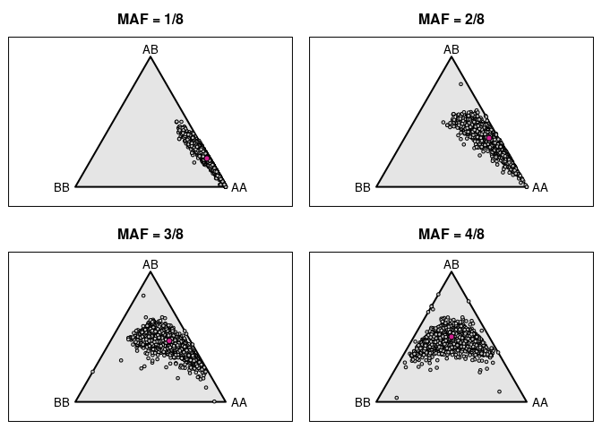

Last updated: 2021-12-07
Checks: 7 0
Knit directory: rta/
This reproducible R Markdown analysis was created with workflowr (version 1.6.2). The Checks tab describes the reproducibility checks that were applied when the results were created. The Past versions tab lists the development history.
Great! Since the R Markdown file has been committed to the Git repository, you know the exact version of the code that produced these results.
Great job! The global environment was empty. Objects defined in the global environment can affect the analysis in your R Markdown file in unknown ways. For reproduciblity it’s best to always run the code in an empty environment.
The command set.seed(20200501) was run prior to running the code in the R Markdown file. Setting a seed ensures that any results that rely on randomness, e.g. subsampling or permutations, are reproducible.
Great job! Recording the operating system, R version, and package versions is critical for reproducibility.
Nice! There were no cached chunks for this analysis, so you can be confident that you successfully produced the results during this run.
Great job! Using relative paths to the files within your workflowr project makes it easier to run your code on other machines.
Great! You are using Git for version control. Tracking code development and connecting the code version to the results is critical for reproducibility.
The results in this page were generated with repository version 06d35f8. See the Past versions tab to see a history of the changes made to the R Markdown and HTML files.
Note that you need to be careful to ensure that all relevant files for the analysis have been committed to Git prior to generating the results (you can use wflow_publish or wflow_git_commit). workflowr only checks the R Markdown file, but you know if there are other scripts or data files that it depends on. Below is the status of the Git repository when the results were generated:
Ignored files:
Ignored: .Rhistory
Ignored: .Rproj.user/
Ignored: code/.Rapp.history
Ignored: data/.Rhistory
Ignored: data/RDS/
Ignored: run/
Untracked files:
Untracked: LICENSE
Untracked: Untitled.R
Untracked: analysis/17_mapping_interpretation_old.Rmd
Untracked: analysis/20_predict_acquisition_from_novelty.Rmd
Untracked: analysis/21_DO_elasticnet_correlation.Rmd
Untracked: analysis/temp.txt
Untracked: code/DO_eQTL_perms.R
Untracked: code/DO_eQTL_score_calc.R
Untracked: code/STAR_RSEM_416.sh
Untracked: code/eQTL_plotting_DO_striatum_416.R
Untracked: code/ggplot_pub_themes.R
Untracked: data/20_elastic_mv_results.csv
Untracked: data/20_elasticnet_predictions.RDS
Untracked: data/DO_416_DGEList.RDS
Untracked: data/DO_416_DGEList_unfiltered (michael.saul@jax.org 2).RDS
Untracked: data/DO_416_DGEList_unfiltered (michael.saul@jax.org 3).RDS
Untracked: data/DO_416_DGEList_unfiltered (michael.saul@jax.org 4).RDS
Untracked: data/DO_416_DGEList_unfiltered (michael.saul@jax.org).RDS
Untracked: data/DO_416_DGEList_unfiltered.RDS
Untracked: data/DO_416_ERCC_DGEList.RDS
Untracked: data/DO_416_ERCC_cpm.RDS
Untracked: data/DO_416_normrt.RDS
Untracked: data/DO_416_pheno.RDS
Untracked: data/DO_416_pheno_allgenes.RDS
Untracked: data/DO_416_voom (michael.saul@jax.org).RDS
Untracked: data/DO_416_voom.RDS
Untracked: data/DO_416_voom_allgenes (michael.saul@jax.org 2).RDS
Untracked: data/DO_416_voom_allgenes (michael.saul@jax.org).RDS
Untracked: data/DO_416_voom_allgenes.RDS
Untracked: data/DO_416_voom_cpresiduals.RDS
Untracked: data/DO_AQ_active_CoV_toptable_annotated.RDS
Untracked: data/DO_AQ_lever_ratio_toptable_annotated.RDS
Untracked: data/DO_AQ_mean_inf_toptable_annotated.RDS
Untracked: data/DO_AQ_rate_toptable_annotated.RDS
Untracked: data/DO_IVSA_acquisition_cancor_df.RDS
Untracked: data/DO_IVSA_acquisition_logit_df.RDS
Untracked: data/DO_IVSA_acquisition_logit_glm.RDS
Untracked: data/DO_IVSA_all_cancor_df.RDS
Untracked: data/DO_IVSA_data.RDS
Untracked: data/DO_IVSA_novelty_cancor_ALL.RDS
Untracked: data/DO_IVSA_novelty_cancor_AQ.RDS
Untracked: data/DO_IVSA_novelty_data.RDS
Untracked: data/DO_IVSA_prediction_ACQUISITION_logit.RDS
Untracked: data/DO_IVSA_prediction_ACQUISITION_logit_2021-01-04.RDS
Untracked: data/DO_IVSA_prediction_ALL_cancor.RDS
Untracked: data/DO_IVSA_prediction_ALL_cancor_2021-01-04.RDS
Untracked: data/DO_IVSA_prediction_ALL_cancor_old.RDS
Untracked: data/DO_IVSA_prediction_AQ_cancor.RDS
Untracked: data/DO_IVSA_prediction_AQ_cancor_2021-01-04.RDS
Untracked: data/DO_IVSA_prediction_a1_ACQUISITION_logit.RDS
Untracked: data/DO_IVSA_prediction_a2_AQ_cancor.RDS
Untracked: data/DO_IVSA_prediction_a3_ALL_cancor.RDS
Untracked: data/DO_IVSA_prediction_a4_male_ALL_cancor.RDS
Untracked: data/DO_IVSA_prediction_a5_female_ALL_cancor.RDS
Untracked: data/DO_IVSA_raw_data.RDS
Untracked: data/DO_IVSA_transformed_data.RDS
Untracked: data/DO_LIMS_data.RDS
Untracked: data/DO_RTG_a1_new.qtl.RData
Untracked: data/DO_RTG_a1_new_1000x.qtlpermu.RData
Untracked: data/DO_RTG_a1_new_mapping_1000x.RData
Untracked: data/DO_RTG_a2_new.qtl.RData
Untracked: data/DO_RTG_a2_new_1000x.qtlpermu.RData
Untracked: data/DO_RTG_a2_new_mapping_1000x.RData
Untracked: data/DO_RTG_a3_new.qtl.RData
Untracked: data/DO_RTG_a3_new_1000x.qtlpermu.RData
Untracked: data/DO_RTG_a3_new_mapping_1000x_01.RData
Untracked: data/DO_RTG_a3_new_mapping_1000x_02.RData
Untracked: data/DO_RTG_a4_new.qtl.RData
Untracked: data/DO_RTG_a5_new.qtl.RData
Untracked: data/DO_RTG_elasticnet_new.qtl.RData
Untracked: data/DO_RTG_elasticnet_new_mapping_1000x.RData
Untracked: data/DO_RTG_project_df_for_mapping.RDS
Untracked: data/DO_RTG_project_df_for_mapping_2020-11-06.RDS
Untracked: data/DO_RTG_project_df_for_mapping_a2.RDS
Untracked: data/DO_RTG_project_df_for_mapping_sexspecific.RDS
Untracked: data/DO_demographic_data_df.RDS
Untracked: data/DO_eigengene_significance.RDS
Untracked: data/DO_eigengenes.RDS
Untracked: data/DO_highcor_cpresiduals_datatable.RDS
Untracked: data/DO_holeboard_data_df.RDS
Untracked: data/DO_holeboard_summarized.RDS
Untracked: data/DO_lightdark_data_df.RDS
Untracked: data/DO_mQTL_peaks.RDS
Untracked: data/DO_mQTL_scan1s.RDS
Untracked: data/DO_module_membership.RDS
Untracked: data/DO_novelplace_data_df.RDS
Untracked: data/DO_novelty_data.RDS
Untracked: data/DO_novelty_response_data.RDS
Untracked: data/DO_novelty_response_data_for_RTG.RDS
Untracked: data/DO_novelty_response_data_with_transform.csv
Untracked: data/DO_openfield_data_df.RDS
Untracked: data/DO_paraclique_data.el
Untracked: data/DO_paraclique_eigengenes.RDS
Untracked: data/DO_paracliques.RDS
Untracked: data/DO_paracliques_significance.RDS
Untracked: data/DO_ploidy_calls.RDS
Untracked: data/DO_pmap.RDS
Untracked: data/DO_pvalue_histograms.RData
Untracked: data/DO_rtg_a1_toptable_annotated.RDS
Untracked: data/DO_rtg_a2_toptable_annotated.RDS
Untracked: data/DO_rtg_a3_toptable_annotated.RDS
Untracked: data/DO_rtg_m1_toptable_annotated.RDS
Untracked: data/DO_rtg_m2_toptable_annotated.RDS
Untracked: data/DO_rtg_m3_toptable_annotated.RDS
Untracked: data/DO_str_2016_eQTL.RData
Untracked: data/DO_str_2016_gm4qtl2.zip
Untracked: data/DO_str_2016_gm4qtl2_intensities.fst
Untracked: data/DO_voom_cpresiduals_NArm.RDS
Untracked: data/DO_wgcna.RDS
Untracked: data/IVSA_RTG_a3_blup.pdf
Untracked: data/IVSA_h2_2019-11-18.tsv
Untracked: data/IVSA_metadata_sheet.RDS
Untracked: data/ME16_edges.tsv
Untracked: data/Mus_musculus.GRCm38.94.parsed.RDS
Untracked: data/Paraclique_19_MF_AMIGO.txt
Untracked: data/RTG_QTL_peaks.RDS
Untracked: data/RTG_figure.RDS
Untracked: data/SENS_RTG/
Untracked: data/Tyr2_genotypes.RDS
Untracked: data/Tyr_genotypes.RDS
Untracked: data/blup_chr7_DO_RTG_a3.RDS
Untracked: data/cc_variants/
Untracked: data/chr18_QTL_results.RDS
Untracked: data/chr4_QTL_results.RDS
Untracked: data/cis/
Untracked: data/eQTL_annotated_peaks.RDS
Untracked: data/eQTL_plots.RData
Untracked: data/figures/
Untracked: data/founders_key/
Untracked: data/gigamuga/
Untracked: data/gwas/
Untracked: data/info/
Untracked: data/m2G.a2.RTG.chr4snp.RData
Untracked: data/mapping_from_hao/
Untracked: data/perms/
Untracked: data/qtl2/
Untracked: data/raw/
Untracked: data/resources/
Untracked: data/tads_loops/
Untracked: data/transcripts/
Untracked: data/variants/
Untracked: logs/
Untracked: new_RTG_a3.jpeg
Untracked: output/RTG_out/
Untracked: output/docs_backup_2020-07-30.tar.gz
Untracked: output/elastic_net_out/
Untracked: singularity/
Untracked: tmp/
Untracked: var/
Unstaged changes:
Deleted: .Rprofile
Modified: .gitignore
Modified: README.md
Modified: analysis/17_mapping_interpretation.Rmd
Modified: analysis/_site.yml
Note that any generated files, e.g. HTML, png, CSS, etc., are not included in this status report because it is ok for generated content to have uncommitted changes.
These are the previous versions of the repository in which changes were made to the R Markdown (analysis/07_DO_eQTL_genotype_prep.Rmd) and HTML (docs/07_DO_eQTL_genotype_prep.html) files. If you’ve configured a remote Git repository (see ?wflow_git_remote), click on the hyperlinks in the table below to view the files as they were in that past version.
| File | Version | Author | Date | Message |
|---|---|---|---|---|
| html | 2e38c65 | Michael C. Saul | 2020-07-30 | Rolling back to working version. |
| html | a743c27 | Michael C. Saul | 2020-05-30 | Build site. |
| html | 5f89658 | Michael C. Saul | 2020-05-29 | Build site. |
| Rmd | c68f180 | Michael C. Saul | 2020-05-29 | Updated output file to exclude genotype probabilities |
| html | b495515 | Michael C. Saul | 2020-05-06 | Build site. |
| Rmd | 1b34c81 | Michael C. Saul | 2020-05-06 | Add eQTL_maRt to output Rdata object |
| html | 84aab57 | Michael C. Saul | 2020-05-06 | Build site. |
| Rmd | fabb7a2 | Michael C. Saul | 2020-05-06 | Initial commit of eQTL genotype prep |
| Rmd | dbeeeff | Michael C. Saul | 2020-05-05 | Initial commit of eQTL prep |
This analysis is performed to prepare the data for downstream use in eQTL analysis.
Calling R libraries necessary for this analysis.
library("limma")
library("edgeR")
library("cowplot")
library("ggbeeswarm")Loading required package: ggplot2library("gplots")
Attaching package: 'gplots'The following object is masked from 'package:stats':
lowesslibrary("RColorBrewer")
library("data.table")
library("biomaRt")
library("MASS")
Attaching package: 'MASS'The following object is masked from 'package:biomaRt':
selectlibrary("qtl2")
library("qtl2convert")
library("tools")
library("fst")
library("lubridate")
Attaching package: 'lubridate'The following objects are masked from 'package:data.table':
hour, isoweek, mday, minute, month, quarter, second, wday, week,
yday, yearThe following object is masked from 'package:cowplot':
stampThe following objects are masked from 'package:base':
date, intersect, setdiff, unionlibrary("broman")
Attaching package: 'broman'The following object is masked from 'package:gplots':
vennnorm_rank_transform functionnorm_rank_transform = function(x, c = 0) {
stopifnot(is.numeric(x) & is.vector(x))
x_noNA = which(!is.na(x))
N = length(x_noNA)
x[x_noNA] = qnorm((rank(x[x_noNA], ties.method = "average") - c) / (N - (2 * c) + 1))
return(x)
}DO_voom = readRDS("./data/DO_416_voom.RDS")
DO_pheno = readRDS("./data/DO_416_pheno.RDS")
DO_demodata = readRDS("./data/DO_demographic_data_df.RDS")
DO_MUGA_ploidy = readRDS("./data/DO_ploidy_calls.RDS")
DO_pheno$MUGA_sex = DO_MUGA_ploidy[row.names(DO_pheno),"sex"]
DO_pheno$MUGA_ploidy = DO_MUGA_ploidy[row.names(DO_pheno),"class"]
DO_pheno$DOB = DO_demodata[row.names(DO_pheno),"DOB"]
rm(list = c("DO_demodata"))Calculating expression results with choroid plexus contamination regressed out.
DO_voom_cpresid = matrix(nrow = nrow(DO_voom$E), ncol = ncol(DO_voom$E))
row.names(DO_voom_cpresid) = row.names(DO_voom$E)
colnames(DO_voom_cpresid) = colnames(DO_voom$E)
for (i in row.names(DO_voom_cpresid)) {
DO_voom_cpresid[i,] = resid(lm(DO_voom$E[i,] ~ DO_pheno$choroid_plexus_covariate))
}
DO_voom = DO_voom_cpresid
rm(list = c("DO_voom_cpresid"))Downloading expresison annotation information from Ensembl using biomaRt.
maRt = useMart(biomart = "ENSEMBL_MART_ENSEMBL",
host = "oct2018.archive.ensembl.org",
dataset = "mmusculus_gene_ensembl")Warning: Ensembl will soon enforce the use of https.
Ensure the 'host' argument includes "https://"maRt_filter = "ensembl_gene_id"
maRt_attributes = c("mgi_symbol","mgi_description","mgi_id","chromosome_name","start_position",
"end_position","strand","band","ensembl_gene_id")
eQTL_maRt = getBM(maRt_attributes, maRt_filter, row.names(DO_voom), maRt)
row.names(eQTL_maRt) = eQTL_maRt$ensembl_gene_id
eQTL_maRt$marker_start = ifelse(sign(eQTL_maRt$strand) == 1,
eQTL_maRt$start_position,
eQTL_maRt$end_position)# The GigaMUGA consensus file was found at the following location on the JAX filesystem:
# /projects/churchill-lab/resource_data/muga_reference/gigamuga_consensus_alleles.csv
# The file on the server has the following MD5 checksum:
# cfb5e353f959cab0451619a3eaa8a796
cat(ifelse(md5sum("./data/resources/gigamuga_consensus_alleles.csv") == "cfb5e353f959cab0451619a3eaa8a796",
"The md5 checksum of the v38 GigaMUGA consensus allele file MATCHES the Churchill Lab's file.",
"The md5 checksum of the v38 GigaMUGA consensus allele file DOES NOT MATCH the Churchill Lab's file."))The md5 checksum of the v38 GigaMUGA consensus allele file MATCHES the Churchill Lab's file.gigamuga_consensus_alleles = read.table("./data/resources/gigamuga_consensus_alleles.csv",
sep = ",", header = TRUE, stringsAsFactors = FALSE)
load(url("ftp://ftp.jax.org/MUGA/GM_snps.Rdata"))
load(url("http://csbio.unc.edu/MUGA/snps.gigamuga.Rdata"))Refining the GigaMUGA consensus allele file
colnames(gigamuga_consensus_alleles) = c("Marker","ChrB38","PosB38",
"allele_129","allele_AJ","allele_B6","allele_CAST",
"allele_NOD","allele_NZO","allele_PWK","allele_WSB")
gigamuga_allele_cols = grep("^allele", colnames(gigamuga_consensus_alleles))
gigamuga_consensus_alleles$ChrB38 = paste("chr",gigamuga_consensus_alleles$ChrB38,sep="")
gigamuga_informative_alleles = gigamuga_consensus_alleles[which(gigamuga_consensus_alleles$ChrB38 != "chrNA"),]
gigamuga_informative_alleles = gigamuga_informative_alleles[which(rowSums(gigamuga_informative_alleles[,gigamuga_allele_cols] == "N") != 8),]
alleles_129 = gigamuga_informative_alleles[,"allele_129"]
gigamuga_informative_alleles = gigamuga_informative_alleles[which(rowSums(gigamuga_informative_alleles[,gigamuga_allele_cols] == alleles_129) != 8),]
rownames(gigamuga_informative_alleles) = as.character(gigamuga_informative_alleles[,"Marker"])Getting list of all data up to this point.
loaded_data = ls()Converting GigaMUGA SNP data from GeneSeek format to R/qtl2 using code from the geneseek2qtl.R script by the Broman lab.
# convert GeneSeek FinalReport files to format for R/qtl2
#
# - creates one genotype CSV file for each chromosome
#
# - also creates 2 files containing the two channels of SNP intensities for markers on the X and Y chr
# (these are useful for verifying the sex of the mice)
# file containing allele codes for GigaMUGA data
# - from GM_processed_files.zip, https://doi.org/10.6084/m9.figshare.5404759
codefile <- "cat ./data/resources/GM/GM_allelecodes.csv"
# input files with GigaMUGA genotypes
# - can be a single file or a vector of multiple files
# - if samples appear in multiple files, the genotypes in later files
# will be used in place of genotypes in earlier files
# - files can be gzipped (".gz" extension)
ifiles <- c("unzip -cq ./data/gigamuga/Jackson_Lab_Bubier_MURGIGV01_20160908/Jackson_Lab_Bubier_MURGIGV01_20160908_FinalReport.zip",
"unzip -cq ./data/gigamuga/Jackson_Lab_Bubier_MURGIGV01_20161227/Jackson_Lab_Bubier_MURGIGV01_20161227_FinalReport.zip",
"unzip -cq ./data/gigamuga/Jackson_Lab_Bubier_MURGIGV01_20170904/Jackson_Lab_Bubier_MURGIGV01_20170904_FinalReport.zip",
"unzip -cq ./data/gigamuga/Jackson_Lab_Bubier_MURGIGIV01_20171001/Jackson_Lab_Bubier_MURGIGV01_20171001_FinalReport.zip",
"unzip -cq ./data/gigamuga/Jackson_Lab_Bubier_MURGIGV01_20180518/Jackson_Lab_Bubier_MURGIGV01_20180518_FinalReport.zip")
# Getting the dates as we will assume later dates with the same ID are reruns of the same data from bad microarrays to deduplicate
ifiles_dates = ymd(gsub("^.*MURGIGV01_(\\d{4})(\\d{2})(\\d{2})_FinalReport\\.zip$","\\1-\\2-\\3",ifiles))
# file "stem" for output files
# output files will be like "gm4qtl2_geno19.csv"
ostem <- "./data/qtl2/DO_str_2016_gm4qtl2_"
##############################
# define a couple of functions
##############################
# version of data.table::fread() where data.table=FALSE is the default
myfread <- function(filename, data.table=FALSE, ...) data.table::fread(filename, data.table=data.table,...)
# cbind, replacing matching columns with second set and adding unique ones
cbind_smother <-
function(mat1, mat2)
{
cn1 <- colnames(mat1)
cn2 <- colnames(mat2)
m <- (cn2 %in% cn1)
if(any(m)) {
mat1[,cn2[m]] <- mat2[,cn2[m],drop=FALSE]
if(any(!m)) {
mat1 <- cbind(mat1, mat2[,cn2[!m],drop=FALSE])
}
}
else {
mat1 <- cbind(mat1, mat2)
}
mat1
}
##############################
# read genotype codes
codes <- data.table::fread(cmd = codefile, skip = "marker", data.table = FALSE)
full_geno <- NULL
cXint <- cYint <- NULL
for(i in 1:length(ifiles)) {
ifile = ifiles[i]
cat(" -File:", ifile, "\n")
cat(" -Reading data\n")
g <- data.table::fread(cmd = ifile, skip = "SNP Name", data.table = FALSE)
# subset to the markers in the codes object
g <- g[g[,"SNP Name"] %in% codes[,"marker"],]
g$`Sample ID` = paste0(g$`Sample ID`,"_file",as.character(ifiles_dates)[i])
# NOTE: may need to revise the IDs in the 2nd column
samples <- unique(g[,"Sample ID"])
# matrix to contain the genotypes
geno <- matrix(nrow=nrow(codes), ncol=length(samples))
dimnames(geno) <- list(codes[,"marker"], samples)
# fill in matrix
cat(" -Reorganizing data\n")
for(i in seq(along=samples)) {
if(i==round(i,-1)) cat(" --Sample", i, "of", length(samples), "\n")
wh <- (g[,"Sample ID"]==samples[i])
geno[g[wh,"SNP Name"],i] <- paste0(g[wh,"Allele1 - Forward"], g[wh,"Allele2 - Forward"])
}
cat(" -Encode genotypes\n")
geno <- qtl2convert::encode_geno(geno, as.matrix(codes[,c("A","B")]))
if(is.null(full_geno)) {
full_geno <- geno
} else {
# if any columns in both, use those from second set
full_geno <- cbind_smother(full_geno, geno)
}
# grab X and Y intensities
cat(" -Grab X and Y intensities\n")
gX <- g[g[,"SNP Name"] %in% codes[codes$chr=="X","marker"],]
gY <- g[g[,"SNP Name"] %in% codes[codes$chr=="Y","marker"],]
cX <- matrix(nrow=sum(codes$chr=="X"),
ncol=length(samples))
dimnames(cX) <- list(codes[codes$chr=="X","marker"], samples)
cY <- matrix(nrow=sum(codes$chr=="Y"),
ncol=length(samples))
dimnames(cY) <- list(codes[codes$chr=="Y","marker"], samples)
for(i in seq(along=samples)) {
if(i==round(i,-1)) {cat(" --Sample", i, "of", length(samples), "\n")
wh <- (gX[,"Sample ID"]==samples[i])
cX[gX[wh,"SNP Name"],i] <- (gX$X[wh] + gX$Y[wh])/2
wh <- (gY[,"Sample ID"]==samples[i])
cY[gY[wh,"SNP Name"],i] <- (gY$X[wh] + gY$Y[wh])/2
}
if(is.null(cXint)) {
cXint <- cX
cYint <- cY
} else {
# if any columns in both, use those from second set
cXint <- cbind_smother(cXint, cX)
cYint <- cbind_smother(cYint, cY)
}
}
} -File: unzip -cq ./data/gigamuga/Jackson_Lab_Bubier_MURGIGV01_20160908/Jackson_Lab_Bubier_MURGIGV01_20160908_FinalReport.zip
-Reading data
-Reorganizing data
--Sample 10 of 286
--Sample 20 of 286
--Sample 30 of 286
--Sample 40 of 286
--Sample 50 of 286
--Sample 60 of 286
--Sample 70 of 286
--Sample 80 of 286
--Sample 90 of 286
--Sample 100 of 286
--Sample 110 of 286
--Sample 120 of 286
--Sample 130 of 286
--Sample 140 of 286
--Sample 150 of 286
--Sample 160 of 286
--Sample 170 of 286
--Sample 180 of 286
--Sample 190 of 286
--Sample 200 of 286
--Sample 210 of 286
--Sample 220 of 286
--Sample 230 of 286
--Sample 240 of 286
--Sample 250 of 286
--Sample 260 of 286
--Sample 270 of 286
--Sample 280 of 286
-Encode genotypes
-Grab X and Y intensities
--Sample 10 of 286
--Sample 20 of 286
--Sample 30 of 286
--Sample 40 of 286
--Sample 50 of 286
--Sample 60 of 286
--Sample 70 of 286
--Sample 80 of 286
--Sample 90 of 286
--Sample 100 of 286
--Sample 110 of 286
--Sample 120 of 286
--Sample 130 of 286
--Sample 140 of 286
--Sample 150 of 286
--Sample 160 of 286
--Sample 170 of 286
--Sample 180 of 286
--Sample 190 of 286
--Sample 200 of 286
--Sample 210 of 286
--Sample 220 of 286
--Sample 230 of 286
--Sample 240 of 286
--Sample 250 of 286
--Sample 260 of 286
--Sample 270 of 286
--Sample 280 of 286
-File: unzip -cq ./data/gigamuga/Jackson_Lab_Bubier_MURGIGV01_20161227/Jackson_Lab_Bubier_MURGIGV01_20161227_FinalReport.zip
-Reading data
-Reorganizing data
--Sample 10 of 192
--Sample 20 of 192
--Sample 30 of 192
--Sample 40 of 192
--Sample 50 of 192
--Sample 60 of 192
--Sample 70 of 192
--Sample 80 of 192
--Sample 90 of 192
--Sample 100 of 192
--Sample 110 of 192
--Sample 120 of 192
--Sample 130 of 192
--Sample 140 of 192
--Sample 150 of 192
--Sample 160 of 192
--Sample 170 of 192
--Sample 180 of 192
--Sample 190 of 192
-Encode genotypes
-Grab X and Y intensities
--Sample 10 of 192
--Sample 20 of 192
--Sample 30 of 192
--Sample 40 of 192
--Sample 50 of 192
--Sample 60 of 192
--Sample 70 of 192
--Sample 80 of 192
--Sample 90 of 192
--Sample 100 of 192
--Sample 110 of 192
--Sample 120 of 192
--Sample 130 of 192
--Sample 140 of 192
--Sample 150 of 192
--Sample 160 of 192
--Sample 170 of 192
--Sample 180 of 192
--Sample 190 of 192
-File: unzip -cq ./data/gigamuga/Jackson_Lab_Bubier_MURGIGV01_20170904/Jackson_Lab_Bubier_MURGIGV01_20170904_FinalReport.zip
-Reading data
-Reorganizing data
--Sample 10 of 60
--Sample 20 of 60
--Sample 30 of 60
--Sample 40 of 60
--Sample 50 of 60
--Sample 60 of 60
-Encode genotypes
-Grab X and Y intensities
--Sample 10 of 60
--Sample 20 of 60
--Sample 30 of 60
--Sample 40 of 60
--Sample 50 of 60
--Sample 60 of 60
-File: unzip -cq ./data/gigamuga/Jackson_Lab_Bubier_MURGIGIV01_20171001/Jackson_Lab_Bubier_MURGIGV01_20171001_FinalReport.zip
-Reading data
-Reorganizing data
--Sample 10 of 11
-Encode genotypes
-Grab X and Y intensities
--Sample 10 of 11
-File: unzip -cq ./data/gigamuga/Jackson_Lab_Bubier_MURGIGV01_20180518/Jackson_Lab_Bubier_MURGIGV01_20180518_FinalReport.zip
-Reading data
-Reorganizing data
--Sample 10 of 312
--Sample 20 of 312
--Sample 30 of 312
--Sample 40 of 312
--Sample 50 of 312
--Sample 60 of 312
--Sample 70 of 312
--Sample 80 of 312
--Sample 90 of 312
--Sample 100 of 312
--Sample 110 of 312
--Sample 120 of 312
--Sample 130 of 312
--Sample 140 of 312
--Sample 150 of 312
--Sample 160 of 312
--Sample 170 of 312
--Sample 180 of 312
--Sample 190 of 312
--Sample 200 of 312
--Sample 210 of 312
--Sample 220 of 312
--Sample 230 of 312
--Sample 240 of 312
--Sample 250 of 312
--Sample 260 of 312
--Sample 270 of 312
--Sample 280 of 312
--Sample 290 of 312
--Sample 300 of 312
--Sample 310 of 312
-Encode genotypes
-Grab X and Y intensities
--Sample 10 of 312
--Sample 20 of 312
--Sample 30 of 312
--Sample 40 of 312
--Sample 50 of 312
--Sample 60 of 312
--Sample 70 of 312
--Sample 80 of 312
--Sample 90 of 312
--Sample 100 of 312
--Sample 110 of 312
--Sample 120 of 312
--Sample 130 of 312
--Sample 140 of 312
--Sample 150 of 312
--Sample 160 of 312
--Sample 170 of 312
--Sample 180 of 312
--Sample 190 of 312
--Sample 200 of 312
--Sample 210 of 312
--Sample 220 of 312
--Sample 230 of 312
--Sample 240 of 312
--Sample 250 of 312
--Sample 260 of 312
--Sample 270 of 312
--Sample 280 of 312
--Sample 290 of 312
--Sample 300 of 312
--Sample 310 of 312 # simple version of data.table::fread()
myfread2 <- function(filename) data.table::fread(cmd = filename, data.table=FALSE, skip=9)
# data at https://doi.org/10.6084/m9.figshare.7359542.v1
# also see https://github.com/rqtl/qtl2data/tree/master/DO_Svenson291
zip_files <- ifiles
# unzip, and read the data
dat <- vector("list", length(zip_files))
for(i in seq_along(zip_files)) {
zipfile <- zip_files[i]
dat[[i]] <- myfread2(zipfile)
}
# Duplicate items exist in multiple files. Resolving these duplicates.
datlen = 1:length(dat)
lenobjdat = rep(NA, times = length(datlen))
filedate = c()
for (i in datlen) {
lenobjdat[i] = nrow(dat[[i]])
filedate = c(filedate, rep(as.character(ifiles_dates[i]), times = lenobjdat[i] ))
}
# rbind the results together, saving selected columns
dat <- do.call("rbind", dat)[,c("SNP Name", "Sample ID", "X", "Y")]
dat$`Sample ID` = paste0(dat$`Sample ID`, "_file", filedate)
# create matrices that are snps x samples
snps <- unique(dat[,"SNP Name"])
samples <- unique(dat[,"Sample ID"])
X <- Y <- matrix(ncol=length(samples), nrow=length(snps))
dimnames(X) <- dimnames(Y) <- list(snps, samples)
for(i in seq(along=samples)) {
message(i, " of ", length(samples))
tmp <- dat[dat[,"Sample ID"]==samples[i],]
X[,samples[i]] <- tmp[,"X"]
Y[,samples[i]] <- tmp[,"Y"]
}1 of 8612 of 8613 of 8614 of 8615 of 8616 of 8617 of 8618 of 8619 of 86110 of 86111 of 86112 of 86113 of 86114 of 86115 of 86116 of 86117 of 86118 of 86119 of 86120 of 86121 of 86122 of 86123 of 86124 of 86125 of 86126 of 86127 of 86128 of 86129 of 86130 of 86131 of 86132 of 86133 of 86134 of 86135 of 86136 of 86137 of 86138 of 86139 of 86140 of 86141 of 86142 of 86143 of 86144 of 86145 of 86146 of 86147 of 86148 of 86149 of 86150 of 86151 of 86152 of 86153 of 86154 of 86155 of 86156 of 86157 of 86158 of 86159 of 86160 of 86161 of 86162 of 86163 of 86164 of 86165 of 86166 of 86167 of 86168 of 86169 of 86170 of 86171 of 86172 of 86173 of 86174 of 86175 of 86176 of 86177 of 86178 of 86179 of 86180 of 86181 of 86182 of 86183 of 86184 of 86185 of 86186 of 86187 of 86188 of 86189 of 86190 of 86191 of 86192 of 86193 of 86194 of 86195 of 86196 of 86197 of 86198 of 86199 of 861100 of 861101 of 861102 of 861103 of 861104 of 861105 of 861106 of 861107 of 861108 of 861109 of 861110 of 861111 of 861112 of 861113 of 861114 of 861115 of 861116 of 861117 of 861118 of 861119 of 861120 of 861121 of 861122 of 861123 of 861124 of 861125 of 861126 of 861127 of 861128 of 861129 of 861130 of 861131 of 861132 of 861133 of 861134 of 861135 of 861136 of 861137 of 861138 of 861139 of 861140 of 861141 of 861142 of 861143 of 861144 of 861145 of 861146 of 861147 of 861148 of 861149 of 861150 of 861151 of 861152 of 861153 of 861154 of 861155 of 861156 of 861157 of 861158 of 861159 of 861160 of 861161 of 861162 of 861163 of 861164 of 861165 of 861166 of 861167 of 861168 of 861169 of 861170 of 861171 of 861172 of 861173 of 861174 of 861175 of 861176 of 861177 of 861178 of 861179 of 861180 of 861181 of 861182 of 861183 of 861184 of 861185 of 861186 of 861187 of 861188 of 861189 of 861190 of 861191 of 861192 of 861193 of 861194 of 861195 of 861196 of 861197 of 861198 of 861199 of 861200 of 861201 of 861202 of 861203 of 861204 of 861205 of 861206 of 861207 of 861208 of 861209 of 861210 of 861211 of 861212 of 861213 of 861214 of 861215 of 861216 of 861217 of 861218 of 861219 of 861220 of 861221 of 861222 of 861223 of 861224 of 861225 of 861226 of 861227 of 861228 of 861229 of 861230 of 861231 of 861232 of 861233 of 861234 of 861235 of 861236 of 861237 of 861238 of 861239 of 861240 of 861241 of 861242 of 861243 of 861244 of 861245 of 861246 of 861247 of 861248 of 861249 of 861250 of 861251 of 861252 of 861253 of 861254 of 861255 of 861256 of 861257 of 861258 of 861259 of 861260 of 861261 of 861262 of 861263 of 861264 of 861265 of 861266 of 861267 of 861268 of 861269 of 861270 of 861271 of 861272 of 861273 of 861274 of 861275 of 861276 of 861277 of 861278 of 861279 of 861280 of 861281 of 861282 of 861283 of 861284 of 861285 of 861286 of 861287 of 861288 of 861289 of 861290 of 861291 of 861292 of 861293 of 861294 of 861295 of 861296 of 861297 of 861298 of 861299 of 861300 of 861301 of 861302 of 861303 of 861304 of 861305 of 861306 of 861307 of 861308 of 861309 of 861310 of 861311 of 861312 of 861313 of 861314 of 861315 of 861316 of 861317 of 861318 of 861319 of 861320 of 861321 of 861322 of 861323 of 861324 of 861325 of 861326 of 861327 of 861328 of 861329 of 861330 of 861331 of 861332 of 861333 of 861334 of 861335 of 861336 of 861337 of 861338 of 861339 of 861340 of 861341 of 861342 of 861343 of 861344 of 861345 of 861346 of 861347 of 861348 of 861349 of 861350 of 861351 of 861352 of 861353 of 861354 of 861355 of 861356 of 861357 of 861358 of 861359 of 861360 of 861361 of 861362 of 861363 of 861364 of 861365 of 861366 of 861367 of 861368 of 861369 of 861370 of 861371 of 861372 of 861373 of 861374 of 861375 of 861376 of 861377 of 861378 of 861379 of 861380 of 861381 of 861382 of 861383 of 861384 of 861385 of 861386 of 861387 of 861388 of 861389 of 861390 of 861391 of 861392 of 861393 of 861394 of 861395 of 861396 of 861397 of 861398 of 861399 of 861400 of 861401 of 861402 of 861403 of 861404 of 861405 of 861406 of 861407 of 861408 of 861409 of 861410 of 861411 of 861412 of 861413 of 861414 of 861415 of 861416 of 861417 of 861418 of 861419 of 861420 of 861421 of 861422 of 861423 of 861424 of 861425 of 861426 of 861427 of 861428 of 861429 of 861430 of 861431 of 861432 of 861433 of 861434 of 861435 of 861436 of 861437 of 861438 of 861439 of 861440 of 861441 of 861442 of 861443 of 861444 of 861445 of 861446 of 861447 of 861448 of 861449 of 861450 of 861451 of 861452 of 861453 of 861454 of 861455 of 861456 of 861457 of 861458 of 861459 of 861460 of 861461 of 861462 of 861463 of 861464 of 861465 of 861466 of 861467 of 861468 of 861469 of 861470 of 861471 of 861472 of 861473 of 861474 of 861475 of 861476 of 861477 of 861478 of 861479 of 861480 of 861481 of 861482 of 861483 of 861484 of 861485 of 861486 of 861487 of 861488 of 861489 of 861490 of 861491 of 861492 of 861493 of 861494 of 861495 of 861496 of 861497 of 861498 of 861499 of 861500 of 861501 of 861502 of 861503 of 861504 of 861505 of 861506 of 861507 of 861508 of 861509 of 861510 of 861511 of 861512 of 861513 of 861514 of 861515 of 861516 of 861517 of 861518 of 861519 of 861520 of 861521 of 861522 of 861523 of 861524 of 861525 of 861526 of 861527 of 861528 of 861529 of 861530 of 861531 of 861532 of 861533 of 861534 of 861535 of 861536 of 861537 of 861538 of 861539 of 861540 of 861541 of 861542 of 861543 of 861544 of 861545 of 861546 of 861547 of 861548 of 861549 of 861550 of 861551 of 861552 of 861553 of 861554 of 861555 of 861556 of 861557 of 861558 of 861559 of 861560 of 861561 of 861562 of 861563 of 861564 of 861565 of 861566 of 861567 of 861568 of 861569 of 861570 of 861571 of 861572 of 861573 of 861574 of 861575 of 861576 of 861577 of 861578 of 861579 of 861580 of 861581 of 861582 of 861583 of 861584 of 861585 of 861586 of 861587 of 861588 of 861589 of 861590 of 861591 of 861592 of 861593 of 861594 of 861595 of 861596 of 861597 of 861598 of 861599 of 861600 of 861601 of 861602 of 861603 of 861604 of 861605 of 861606 of 861607 of 861608 of 861609 of 861610 of 861611 of 861612 of 861613 of 861614 of 861615 of 861616 of 861617 of 861618 of 861619 of 861620 of 861621 of 861622 of 861623 of 861624 of 861625 of 861626 of 861627 of 861628 of 861629 of 861630 of 861631 of 861632 of 861633 of 861634 of 861635 of 861636 of 861637 of 861638 of 861639 of 861640 of 861641 of 861642 of 861643 of 861644 of 861645 of 861646 of 861647 of 861648 of 861649 of 861650 of 861651 of 861652 of 861653 of 861654 of 861655 of 861656 of 861657 of 861658 of 861659 of 861660 of 861661 of 861662 of 861663 of 861664 of 861665 of 861666 of 861667 of 861668 of 861669 of 861670 of 861671 of 861672 of 861673 of 861674 of 861675 of 861676 of 861677 of 861678 of 861679 of 861680 of 861681 of 861682 of 861683 of 861684 of 861685 of 861686 of 861687 of 861688 of 861689 of 861690 of 861691 of 861692 of 861693 of 861694 of 861695 of 861696 of 861697 of 861698 of 861699 of 861700 of 861701 of 861702 of 861703 of 861704 of 861705 of 861706 of 861707 of 861708 of 861709 of 861710 of 861711 of 861712 of 861713 of 861714 of 861715 of 861716 of 861717 of 861718 of 861719 of 861720 of 861721 of 861722 of 861723 of 861724 of 861725 of 861726 of 861727 of 861728 of 861729 of 861730 of 861731 of 861732 of 861733 of 861734 of 861735 of 861736 of 861737 of 861738 of 861739 of 861740 of 861741 of 861742 of 861743 of 861744 of 861745 of 861746 of 861747 of 861748 of 861749 of 861750 of 861751 of 861752 of 861753 of 861754 of 861755 of 861756 of 861757 of 861758 of 861759 of 861760 of 861761 of 861762 of 861763 of 861764 of 861765 of 861766 of 861767 of 861768 of 861769 of 861770 of 861771 of 861772 of 861773 of 861774 of 861775 of 861776 of 861777 of 861778 of 861779 of 861780 of 861781 of 861782 of 861783 of 861784 of 861785 of 861786 of 861787 of 861788 of 861789 of 861790 of 861791 of 861792 of 861793 of 861794 of 861795 of 861796 of 861797 of 861798 of 861799 of 861800 of 861801 of 861802 of 861803 of 861804 of 861805 of 861806 of 861807 of 861808 of 861809 of 861810 of 861811 of 861812 of 861813 of 861814 of 861815 of 861816 of 861817 of 861818 of 861819 of 861820 of 861821 of 861822 of 861823 of 861824 of 861825 of 861826 of 861827 of 861828 of 861829 of 861830 of 861831 of 861832 of 861833 of 861834 of 861835 of 861836 of 861837 of 861838 of 861839 of 861840 of 861841 of 861842 of 861843 of 861844 of 861845 of 861846 of 861847 of 861848 of 861849 of 861850 of 861851 of 861852 of 861853 of 861854 of 861855 of 861856 of 861857 of 861858 of 861859 of 861860 of 861861 of 861# bring together in one matrix
result <- cbind(snp=rep(snps, 2),
channel=rep(c("X", "Y"), each=length(snps)),
as.data.frame(rbind(X, Y)))
rownames(result) <- 1:nrow(result)
# bring SNP rows together
result <- result[as.numeric(t(cbind(seq_along(snps), seq_along(snps)+length(snps)))),]
rownames(result) <- 1:nrow(result)Making phenotype and covariate tables and writing these data out to csv files.
pheno_full = data.frame(row.names = colnames(full_geno),
id = colnames(full_geno),
sample = gsub("^(\\d{4,5})_.*$","\\1",colnames(full_geno)),
stringsAsFactors = FALSE)
has_genotype_exprs = row.names(DO_pheno)[which((row.names(DO_pheno) %in% pheno_full$sample))]
pheno_full = pheno_full[which(pheno_full$sample %in% has_genotype_exprs),]
DO_pheno_has_exprs_geno = cbind(pheno_full, DO_pheno[pheno_full$sample,])
DO_pheno_has_exprs_geno = DO_pheno_has_exprs_geno[which(DO_pheno_has_exprs_geno$notkept_cols == "kept"),]
DO_pheno_has_exprs_geno = DO_pheno_has_exprs_geno[which(DO_pheno_has_exprs_geno$MUGA_ploidy == "female" |
DO_pheno_has_exprs_geno$MUGA_ploidy == "male" ),]
DO_pheno_has_exprs_geno = DO_pheno_has_exprs_geno[,c("id","sample","MUGA_sex","Generation","choroid_plexus_covariate","DOB")]
colnames(DO_pheno_has_exprs_geno) = c("id","subject","sex","ngen","choroid_plexus_covariate","dob")
DO_pheno_has_exprs_geno$ngen = as.numeric(gsub("G","",DO_pheno_has_exprs_geno$ngen))
DO_pheno_has_exprs_geno[which(DO_pheno_has_exprs_geno$sex == "female"),"sex"] = "F"
DO_pheno_has_exprs_geno[which(DO_pheno_has_exprs_geno$sex == "male"),"sex"] = "M"
qtl2convert::write2csv(DO_pheno_has_exprs_geno,
paste0(ostem, "covar.csv"),
paste(ostem, "Phenotypes"),
overwrite = TRUE)
DO_voom_has_exprs_geno = t(DO_voom)
DO_voom_has_exprs_geno = DO_voom_has_exprs_geno[DO_pheno_has_exprs_geno$subject,]
row.names(DO_voom_has_exprs_geno) = row.names(DO_pheno_has_exprs_geno)
DO_voom_has_exprs_geno = as.data.frame(DO_voom_has_exprs_geno)
DO_voom_cols = colnames(DO_voom_has_exprs_geno)
DO_voom_has_exprs_geno$id = as.character(row.names(DO_voom_has_exprs_geno))
DO_voom_has_exprs_geno = DO_voom_has_exprs_geno[,c("id",DO_voom_cols)]
qtl2convert::write2csv(DO_voom_has_exprs_geno,
paste0(ostem, "pheno.csv"),
paste(ostem, "Phenotypes"),
overwrite = TRUE)Note that the phenotype data now include duplicated information for genotype data that are duplicated.
Writing out intensity data for these same files.
result = result[,which(colnames(result) %in% row.names(DO_pheno_has_exprs_geno))]
# write to fst file, maximally compressed
write.fst(result, "./data/DO_str_2016_gm4qtl2_intensities.fst", compress=100)Getting genotype data for just these chromosomes.
cXint = cXint[,row.names(DO_pheno_has_exprs_geno)]
cYint = cYint[,row.names(DO_pheno_has_exprs_geno)]
full_geno = full_geno[,row.names(DO_pheno_has_exprs_geno)]Writing out genotype data.
# write X and Y intensities
cat(" -Writing X and Y intensities\n") -Writing X and Y intensitiesqtl2convert::write2csv(cbind(marker=rownames(cXint), cXint),
paste0(ostem, "chrXint.csv"),
paste(ostem, "X chr intensities"),
overwrite=TRUE)
qtl2convert::write2csv(cbind(marker=rownames(cYint), cYint),
paste0(ostem, "chrYint.csv"),
paste(ostem, "Y chr intensities"),
overwrite=TRUE)
# write data to chromosome-specific files
cat(" -Writing genotypes\n") -Writing genotypesfor(chr in c(1:19,"X","Y","M")) {
mar <- codes[codes$chr==chr,"marker"]
g <- full_geno[mar,]
qtl2convert::write2csv(cbind(marker=rownames(g), g),
paste0(ostem, "geno", chr, ".csv"),
paste0(ostem, "_genotypes_for_chr ", chr),
overwrite=TRUE)
}Making control file (code taken from Karl Broman’s code on the qtl2 documentation).
chr <- c(1:19, "X")
write_control_file("./data/qtl2/DO_str_2016_gm4qtl2.json",
crosstype="do",
description="DO Striatum 416 eQTL Data",
founder_geno_file=paste0("GM/GM_foundergeno", chr, ".csv"),
founder_geno_transposed=TRUE,
gmap_file=paste0("GM/GM_gmap", chr, ".csv"),
pmap_file=paste0("GM/GM_pmap", chr, ".csv"),
geno_file=paste0("DO_str_2016_gm4qtl2_geno", chr, ".csv"),
geno_transposed=TRUE,
geno_codes=list(A=1, H=2, B=3),
xchr="X",
pheno_file="DO_str_2016_gm4qtl2_pheno.csv",
covar_file="DO_str_2016_gm4qtl2_covar.csv",
sex_covar="sex",
sex_codes=list(F="Female", M="Male"),
crossinfo_covar="ngen",
overwrite=TRUE)Zipping the data files
zip_datafiles("./data/qtl2/DO_str_2016_gm4qtl2.json",
zip_file = "./data/DO_str_2016_gm4qtl2.zip",
overwrite = TRUE)The md5 checksums for the output files are:
| file | md5 checksum |
|---|---|
DO_str_2016_gm4qtl2.zip |
8d3e883ca5e01a1e44a2ad20e89d12cf |
Removing objects generated during the conversion to qtl2 format.
rm(list = ls()[-1 * which(ls() %in% loaded_data)])
rm(list = c("DO_pheno","DO_voom","DO_MUGA_ploidy"))Reading in the cross data.
DO_str_2016_cross = read_cross2("./data/DO_str_2016_gm4qtl2.zip")Using the procedures from the R/qtl2 vignette on DO diagnostics.
DO_str_2016_cross = drop_nullmarkers(DO_str_2016_cross)Dropping 140 markers with no dataWe have already done a systematic examination for X chromosome aneuploidies and sex mismatches and resolved or excluded those data from this analysis.
Looking for duplicated samples in the dataset.
cg = compare_geno(DO_str_2016_cross, cores = 0)
summary(cg)There are many samples with identical or near-identical genotypes. Some of these are reruns of the same chip that might’ve failed QC (note: this is a known issue from above). Plotting percent missing as an initial step in resolving this problem.
percent_missing = n_missing(DO_str_2016_cross, "ind", "prop") * 100
percent_missing = data.frame(id = names(percent_missing),
order = as.numeric(order(names(percent_missing))),
percent = percent_missing,
gtrthan3 = ifelse(percent_missing > 3, "YES","no"),
stringsAsFactors = FALSE)
ggplot(data = percent_missing, aes(x = order, y = percent, color = gtrthan3)) +
geom_point() +
scale_y_log10(limits = c(0.001,100)) +
scale_color_manual(values = c("#555555","#CC3333"))
| Version | Author | Date |
|---|---|---|
| 2e38c65 | Michael C. Saul | 2020-07-30 |
| a743c27 | Michael C. Saul | 2020-05-30 |
| 84aab57 | Michael C. Saul | 2020-05-06 |
8 points have greater than 3% missing markers. 8 (all) of those are unique. Excluding the bad files from the cg repeated files set.
duplicated_cg = unique(c(summary(cg)$ind1, summary(cg)$ind2))
exclude_cg = duplicated_cg[which(duplicated_cg %in% percent_missing[which(percent_missing$gtrthan3 == "YES"),"id"])]
DO_str_2016_cross = DO_str_2016_cross[paste0("-",exclude_cg),]
cg = compare_geno(DO_str_2016_cross, cores = 0)
summary(cg)For the remaining genotypes, taking the one at a later date for the ones not excluded by the initial QC deduplication. Assuming that later date means there was a reason for regenotyping the animal.
duplicated_cg = unique(c(summary(cg)$ind1, summary(cg)$ind2))
duplicated_cg = data.frame(id = duplicated_cg,
subject = gsub("^(\\d{4,5}).*$","\\1",duplicated_cg),
date = ymd(gsub("^.*file(\\d{4}-\\d{2}-\\d{2})$","\\1",duplicated_cg)),
dup_subject = rep(FALSE, times = length(duplicated_cg)),
stringsAsFactors = FALSE)
dup_subjects = unique(duplicated_cg[which(duplicated(duplicated_cg$subject)),"subject"])
exclude_cg = c()
unresolved_cg = c()
for (i in dup_subjects) {
dup_subjects_rows_i = which(duplicated_cg$subject == i)
dup_dates_i = duplicated_cg[dup_subjects_rows_i,"date"]
if (length(which(duplicated(dup_dates_i))) != 0) {
unresolved_cg = c(unresolved_cg, duplicated_cg[dup_subjects_rows_i,"id"])
} else {
exclude_cg = c(exclude_cg, duplicated_cg[dup_subjects_rows_i[which(dup_dates_i != max(dup_dates_i))],"id"])
}
}
cat("IDs ", paste(unresolved_cg, sep = "", collapse = ", "), " cannot be resolved by date.\n", sep = "")IDs cannot be resolved by date.Excluding what appears to be the second file from the file that cannot be resolved. Rerunning duplication analysis.
# exclude_cg = c(exclude_cg, "8166_200840140018_R01C01_file2016-12-27")
DO_str_2016_cross = DO_str_2016_cross[paste0("-",exclude_cg),]
cg = compare_geno(DO_str_2016_cross, cores = 0)
summary(cg)The rest of these files have different subject IDs. After spot-checking GBRS data on a couple of these, it appears to be an error on the genotyping. Excluding these data as it is impossible to reconcile them with the behavioral data associated with these animals.
exclude_cg = unique(c(summary(cg)$ind1, summary(cg)$ind2))
DO_str_2016_cross = DO_str_2016_cross[paste0("-",exclude_cg),]Finally, looking at duplications with high percent missing numbers that may not have been caught in the deduplication analysis above.
covar_duplicate_subjects = DO_str_2016_cross$covar[which(duplicated(DO_str_2016_cross$covar$subject)),"subject"]
covar_duplicate_ids = row.names(DO_str_2016_cross$covar[which(DO_str_2016_cross$covar$subject %in% covar_duplicate_subjects),])
percent_missing[covar_duplicate_ids,]Excluding those files with very different percent missing numbers and both files when the numbers aren’t very different.
exclude_id = c("7649_file2016-09-08","7747_file2016-09-08","8042_200735410008_R11C02_file2016-09-08",
"8066_file2016-09-08","8663_200840140080_R08C01_file2016-12-27","8663_200840140005_R10C02_file2016-12-27")
DO_str_2016_cross = DO_str_2016_cross[paste0("-",exclude_id),]Warning in subset_ind(ind, ind_g, allow_logical): Some individuals not in cross:
7649_file2016-09-08cat(ifelse(length(unique(DO_str_2016_cross$covar$subject)) == length(DO_str_2016_cross$covar$subject),
"Deduplication successful.\n", "Deduplication NOT successful.\n"), sep = "")Deduplication successful.There are a total of 362 data points that will be included.
Finding markers with lots of missing data.
pmis_mar <- n_missing(DO_str_2016_cross, "marker", "proportion") * 100
par(mar=c(5.1,0.6,0.6, 0.6))
hist(pmis_mar, breaks=seq(0, 100, length=201),
main="", yaxt="n", ylab="", xlab="Percent missing genotypes")
rug(pmis_mar)
| Version | Author | Date |
|---|---|---|
| 2e38c65 | Michael C. Saul | 2020-07-30 |
| a743c27 | Michael C. Saul | 2020-05-30 |
| 84aab57 | Michael C. Saul | 2020-05-06 |
As in Broman’s vignette, excluding markers with > 15% missing genotypes.
exclude_missing = names(pmis_mar[which(pmis_mar > 15)])
DO_str_2016_cross = drop_markers(DO_str_2016_cross, exclude_missing)n_cores = 2DO_str_2016_gprobs = calc_genoprob(DO_str_2016_cross, error_prob=0.002, map_function="c-f", cores=n_cores)
DO_str_2016_aprobs = genoprob_to_alleleprob(DO_str_2016_gprobs, cores=n_cores)DO_str_2016_kinship = calc_kinship(DO_str_2016_aprobs, "loco", cores=n_cores)Displaying kinship matrix for chromosome 1.
image(1:nrow(DO_str_2016_kinship[[1]]), 1:ncol(DO_str_2016_kinship[[1]]), DO_str_2016_kinship[[1]][,ncol(DO_str_2016_kinship[[1]]):1], xlab = "Samples",
ylab = "Samples", yaxt = "n", main = "Kinship between samples (chr1)",
breaks = 0:100/100, col = colorRampPalette(brewer.pal(n = 9, name = "YlGn"))(length(0:100/100) - 1))
| Version | Author | Date |
|---|---|---|
| 2e38c65 | Michael C. Saul | 2020-07-30 |
| a743c27 | Michael C. Saul | 2020-05-30 |
| 84aab57 | Michael C. Saul | 2020-05-06 |
m <- maxmarg(DO_str_2016_gprobs, minprob=0.5, cores=0)
nxo <- count_xo(m, cores=0)
totxo <- rowSums(nxo)Plotting crossovers by mouse ID and generation
DO_str_2016_XOs = DO_str_2016_cross$covar
DO_str_2016_XOs$totxo = totxo[row.names(DO_str_2016_XOs)]
DO_str_2016_XOs$order_subject = rank(as.numeric(DO_str_2016_XOs$subject))
DO_str_2016_XOs$ngen = factor(paste0("generation ", DO_str_2016_XOs$ngen),
levels = c("generation 21", "generation 22", "generation 23"),
ordered = TRUE)
ggplot(data = DO_str_2016_XOs, aes(x = order_subject, y = totxo, color = ngen)) +
geom_point() +
theme_bw() +
theme(panel.grid = element_blank()) +
xlab("Subject Order (by JMCRS ID)") +
ylab("Number of Crossovers") +
scale_color_manual(values = c("#3399CC","#FFCC33","#CC3333"))
| Version | Author | Date |
|---|---|---|
| 2e38c65 | Michael C. Saul | 2020-07-30 |
| a743c27 | Michael C. Saul | 2020-05-30 |
| 5f89658 | Michael C. Saul | 2020-05-29 |
| b495515 | Michael C. Saul | 2020-05-06 |
| 84aab57 | Michael C. Saul | 2020-05-06 |
One of these points has an absurdly low number for crossovers, but the rest appear to obey the effect of more crossovers per generation. Dropping the very low number of crossovers sample as this appears to be problematic.
DO_str_2016_cross = DO_str_2016_cross[paste0("-",row.names(DO_str_2016_XOs[which(DO_str_2016_XOs$totxo < 200),])),]Examining the minor allele frequencies.
g <- do.call("cbind", DO_str_2016_cross$geno[1:19])
fg <- do.call("cbind", DO_str_2016_cross$founder_geno[1:19])
g <- g[,colSums(fg==0)==0]
fg <- fg[,colSums(fg==0)==0]
fgn <- colSums(fg==3)
gf_ind <- vector("list", 4)
for(i in 1:4) {
gf_ind[[i]] <- t(apply(g[,fgn==i], 1, function(a) table(factor(a, 1:3))/sum(a != 0)))
}
par(mfrow=c(2,2), mar=c(0.6, 0.6, 2.6, 0.6))
for(i in 1:4) {
triplot(c("AA", "AB", "BB"), main=paste0("MAF = ", i, "/8"))
tripoints(gf_ind[[i]], pch=21, bg="lightblue")
tripoints(c((1-i/8)^2, 2*i/8*(1-i/8), (i/8)^2), pch=21, bg="violetred")
if(i>=3) { # label mouse with lowest het
wh <- which(gf_ind[[i]][,2] == min(gf_ind[[i]][,2]))
tritext(gf_ind[[i]][wh,,drop=FALSE] + c(0.02, -0.02, 0),
names(wh), adj=c(0, 1))
}
# label other mice
if(i==1) {
lab <- rownames(gf_ind[[i]])[gf_ind[[i]][,2]>0.3]
}
else if(i==2) {
lab <- rownames(gf_ind[[i]])[gf_ind[[i]][,2]>0.48]
}
else if(i==3) {
lab <- rownames(gf_ind[[i]])[gf_ind[[i]][,2]>0.51]
}
else if(i==4) {
lab <- rownames(gf_ind[[i]])[gf_ind[[i]][,2]>0.6]
}
for(ind in lab) {
if(grepl("^F", ind) && i != 3) {
tritext(gf_ind[[i]][ind,,drop=FALSE] + c(-0.01, 0, +0.01), ind, adj=c(1,0.5))
} else {
tritext(gf_ind[[i]][ind,,drop=FALSE] + c(0.01, 0, -0.01), ind, adj=c(0,0.5))
}
}
}
| Version | Author | Date |
|---|---|---|
| 2e38c65 | Michael C. Saul | 2020-07-30 |
| a743c27 | Michael C. Saul | 2020-05-30 |
| 84aab57 | Michael C. Saul | 2020-05-06 |
For no sample do the MAFs appear to have systematic problems. There are a couple of samples that appear to be outliers in a couple of the MAF conditions, but these look appropriate for DO mice. Not dropping any samples based upon this criterion.
First, using error LOD scores.
e <- calc_errorlod(DO_str_2016_cross, DO_str_2016_gprobs, cores=0)Warning in selectChildren(ac[!fin], -1): error 'No child processes' in select
Warning in selectChildren(ac[!fin], -1): error 'No child processes' in select
Warning in selectChildren(ac[!fin], -1): error 'No child processes' in selecte <- do.call("cbind", e)
errors_ind <- rowSums(e>2)/n_typed(DO_str_2016_cross)*100
lab <- paste0(gsub("^(\\d{4,5})_.*$","\\1",names(errors_ind)), " (", myround(percent_missing[names(errors_ind),"percent"],1), "% missing)")
error_df = data.frame(index = seq_along(errors_ind),
label = lab,
error = errors_ind,
stringsAsFactors = FALSE)
ggplot(data = error_df, aes(x = index, y = error, label = label)) +
geom_point() +
geom_label()
| Version | Author | Date |
|---|---|---|
| 2e38c65 | Michael C. Saul | 2020-07-30 |
| a743c27 | Michael C. Saul | 2020-05-30 |
| 84aab57 | Michael C. Saul | 2020-05-06 |
There are 1 samples with error LODs > 2 in at least 1% of samples. This does not look very bad. We needn’t necessarily remove samples based upon this criterion.
snpg <- predict_snpgeno(DO_str_2016_cross, m, cores=0)
snpg <- do.call("cbind", snpg)
gobs <- do.call("cbind", DO_str_2016_cross$geno)
gobs[gobs==0] <- NA
par(pty="s")
err_direct <- rowMeans(snpg != gobs, na.rm=TRUE)*100
errors_ind_0 <- rowSums(e > 0)/n_typed(DO_str_2016_cross)*100
par(mar=c(4.1,4.1,0.6, 0.6), mfrow = c(2,1))
grayplot(errors_ind_0, err_direct,
xlab="Percent errors (error LOD > 0)",
ylab="Percent errors (obs vs predicted)",
xlim=c(0, 21.2), ylim=c(0, 21.2))
abline(0,1,lty=2, col="gray60")
grayplot(errors_ind_0, err_direct,
xlab="Percent errors (error LOD > 0)",
ylab="Percent errors (obs vs predicted)",
xlim=c(0, 3), ylim=c(0, 3))
abline(0,1,lty=2, col="gray60")
| Version | Author | Date |
|---|---|---|
| 2e38c65 | Michael C. Saul | 2020-07-30 |
| a743c27 | Michael C. Saul | 2020-05-30 |
| 84aab57 | Michael C. Saul | 2020-05-06 |
The highest of proportion of errors doesn’t appear to go much over 1.5%. These samples can likely be maintained, but the markers with high amounts of errors might need to be censored.
QCing markers by comparing their realized genotype frequencies to those expected under the theoretical MAFs.
gf_mar <- t(apply(g, 2, function(a) table(factor(a, 1:3))/sum(a != 0)))
gn_mar <- t(apply(g, 2, function(a) table(factor(a, 1:3))))
par(mfrow=c(2,2), mar=c(0.6, 0.6, 2.6, 0.6))
for(i in 1:4) {
triplot(c("AA", "AB", "BB"), main=paste0("MAF = ", i, "/8"))
z <- gf_mar[fgn==i,]
z <- z[rowSums(is.na(z)) < 3,]
tripoints(z, pch=21, bg="gray80", cex=0.6)
tripoints(c((1-i/8)^2, 2*i/8*(1-i/8), (i/8)^2), pch=21, bg="violetred")
}
| Version | Author | Date |
|---|---|---|
| 2e38c65 | Michael C. Saul | 2020-07-30 |
| a743c27 | Michael C. Saul | 2020-05-30 |
| 84aab57 | Michael C. Saul | 2020-05-06 |
On the \(MAF = 1/8\) plot, no evidence of the WSB R2D2, which was flushed by this generation of DO. There are a number of genotypes that appear unusual. However, these plots appear better behaved than the ones in Broman’s vignette.
Using the genotype LOD scores to identify markers needing exclusion.
errors_mar <- colSums(e>2)/n_typed(DO_str_2016_cross, "marker")*100
errors_mar_df = data.frame(marker = names(errors_mar),
gtr_than_5 = ifelse(errors_mar > 5, "YES", "no"),
errors = errors_mar,
missing = pmis_mar[names(errors_mar)],
stringsAsFactors = FALSE)
ggplot(data = errors_mar_df, aes(x = missing, y = errors, color = gtr_than_5)) +
geom_point(alpha = 0.5) +
xlab("Proportion missing") +
ylab("Proportion genotyping errors") +
theme_bw() +
theme(panel.grid = element_blank())
| Version | Author | Date |
|---|---|---|
| 2e38c65 | Michael C. Saul | 2020-07-30 |
| a743c27 | Michael C. Saul | 2020-05-30 |
| 84aab57 | Michael C. Saul | 2020-05-06 |
There are many markers with more than 5% errant genotypes. For these 728 markers (0.6540528) percent of the total markers), will exclude them.
DO_str_2016_cross = drop_markers(DO_str_2016_cross, errors_mar_df[which(errors_mar_df$gtr_than_5 == "YES"),"marker"])Now that markers have been excluded, recalculating genotype and allele probabilities and kinship.
DO_str_2016_gprobs = calc_genoprob(DO_str_2016_cross, error_prob=0.002, map_function="c-f", cores=n_cores)
DO_str_2016_aprobs = genoprob_to_alleleprob(DO_str_2016_gprobs, cores=n_cores)
DO_str_2016_kinship = calc_kinship(DO_str_2016_aprobs, "loco", cores=n_cores)Displaying kinship matrix for chromosome 1.
image(1:nrow(DO_str_2016_kinship[[1]]), 1:ncol(DO_str_2016_kinship[[1]]), DO_str_2016_kinship[[1]][,ncol(DO_str_2016_kinship[[1]]):1], xlab = "Samples",
ylab = "Samples", yaxt = "n", main = "Kinship between samples (chr1)",
breaks = 0:100/100, col = colorRampPalette(brewer.pal(n = 9, name = "YlGn"))(length(0:100/100) - 1))
| Version | Author | Date |
|---|---|---|
| 2e38c65 | Michael C. Saul | 2020-07-30 |
| a743c27 | Michael C. Saul | 2020-05-30 |
| 84aab57 | Michael C. Saul | 2020-05-06 |
save(list = c("DO_str_2016_cross",
"DO_str_2016_aprobs",
"DO_str_2016_kinship",
"eQTL_maRt"), file = "./data/DO_str_2016_eQTL.RData",
compress = "gzip")The md5 checksums for the output files are:
| file | md5 checksum |
|---|---|
DO_str_2016_eQTL.RData |
cc1eb40b78683efe86145c7cb880c910 |
This document was prepared using RMarkdown in RStudio. It was converted to workflowr on 2020-05-04.
sessionInfo()R version 4.1.2 (2021-11-01)
Platform: x86_64-pc-linux-gnu (64-bit)
Running under: Ubuntu 20.04.3 LTS
Matrix products: default
BLAS/LAPACK: /usr/lib/x86_64-linux-gnu/openblas-pthread/libopenblasp-r0.3.8.so
locale:
[1] LC_CTYPE=en_US.UTF-8 LC_NUMERIC=C
[3] LC_TIME=en_US.UTF-8 LC_COLLATE=en_US.UTF-8
[5] LC_MONETARY=en_US.UTF-8 LC_MESSAGES=C
[7] LC_PAPER=en_US.UTF-8 LC_NAME=C
[9] LC_ADDRESS=C LC_TELEPHONE=C
[11] LC_MEASUREMENT=en_US.UTF-8 LC_IDENTIFICATION=C
attached base packages:
[1] tools stats graphics grDevices utils datasets methods
[8] base
other attached packages:
[1] broman_0.76 lubridate_1.8.0 fst_0.9.4 qtl2convert_0.26
[5] qtl2_0.28 MASS_7.3-54 biomaRt_2.50.1 data.table_1.14.2
[9] RColorBrewer_1.1-2 gplots_3.1.1 ggbeeswarm_0.6.0 ggplot2_3.3.5
[13] cowplot_1.1.1 edgeR_3.36.0 limma_3.50.0
loaded via a namespace (and not attached):
[1] bitops_1.0-7 fs_1.5.1 bit64_4.0.5
[4] filelock_1.0.2 progress_1.2.2 httr_1.4.2
[7] rprojroot_2.0.2 GenomeInfoDb_1.30.0 utf8_1.2.2
[10] R6_2.5.1 KernSmooth_2.23-20 vipor_0.4.5
[13] DBI_1.1.1 BiocGenerics_0.40.0 colorspace_2.0-2
[16] withr_2.4.3 tidyselect_1.1.1 prettyunits_1.1.1
[19] bit_4.0.4 curl_4.3.2 compiler_4.1.2
[22] git2r_0.29.0 Biobase_2.54.0 xml2_1.3.3
[25] labeling_0.4.2 caTools_1.18.2 scales_1.1.1
[28] rappdirs_0.3.3 stringr_1.4.0 digest_0.6.29
[31] rmarkdown_2.11 XVector_0.34.0 pkgconfig_2.0.3
[34] htmltools_0.5.2 highr_0.9 dbplyr_2.1.1
[37] fastmap_1.1.0 rlang_0.4.12 RSQLite_2.2.9
[40] farver_2.1.0 jquerylib_0.1.4 generics_0.1.1
[43] jsonlite_1.7.2 gtools_3.9.2 dplyr_1.0.7
[46] RCurl_1.98-1.5 magrittr_2.0.1 qtl_1.50
[49] GenomeInfoDbData_1.2.7 Rcpp_1.0.7 munsell_0.5.0
[52] S4Vectors_0.32.3 fansi_0.5.0 lifecycle_1.0.1
[55] stringi_1.7.6 whisker_0.4 yaml_2.2.1
[58] zlibbioc_1.40.0 BiocFileCache_2.2.0 grid_4.1.2
[61] blob_1.2.2 parallel_4.1.2 promises_1.2.0.1
[64] crayon_1.4.2 lattice_0.20-45 Biostrings_2.62.0
[67] hms_1.1.1 KEGGREST_1.34.0 locfit_1.5-9.4
[70] knitr_1.36 pillar_1.6.4 stats4_4.1.2
[73] XML_3.99-0.8 glue_1.5.1 evaluate_0.14
[76] png_0.1-7 vctrs_0.3.8 httpuv_1.6.3
[79] gtable_0.3.0 purrr_0.3.4 assertthat_0.2.1
[82] cachem_1.0.6 xfun_0.28 later_1.3.0
[85] tibble_3.1.6 AnnotationDbi_1.56.2 beeswarm_0.4.0
[88] memoise_2.0.1 IRanges_2.28.0 workflowr_1.6.2
[91] ellipsis_0.3.2